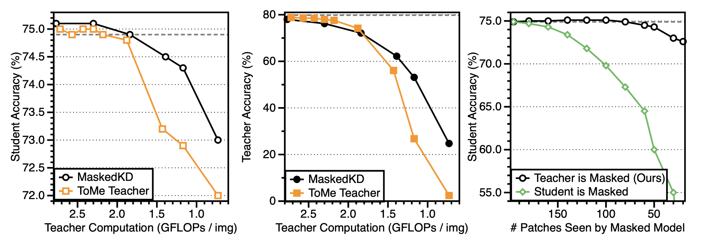

Knowledge distillation is an effective method for training lightweight vision models. However, acquiring teacher supervision for training samples is often costly, especially from large-scale models like vision transformers (ViTs). In this paper, we develop a simple framework to reduce the supervision cost of ViT distillation: masking out a fraction of input tokens given to the teacher. By masking input tokens, one can skip the computations associated with the masked tokens without requiring any change to teacher parameters or architecture. We find that masking patches with the lowest student attention scores is highly effective, saving up to 50% of teacher FLOPs without any drop in student accuracy, while other masking criterion leads to suboptimal efficiency gains. Through in-depth analyses, we reveal that the student-guided masking provides a good curriculum to the student, making teacher supervision easier to follow during the early stage and challenging in the later stage.
MaskedKD(Masked Knowledge Distillation) is a very simple yet effective approach for reducing supervision cost by masking the teacher input tokens. Given a training image-label sample $(x, y)$, we generate a masked version $x_{mask}$ of the input image by removing some patches of the image $x$. Then, we train the student by using the following loss: \begin{equation} \ell(x,y) = \ell_{\mathtt{CE}}(f_S(x),y) + \lambda \cdot \ell_{\mathtt{KD}}(f_S(x),f_T(x_{\mathtt{mask}})),\label{eq:maskedkd} \end{equation} where $ℓ_{CE}$ denotes the cross-entropy loss, $ℓ_{KD}$ denotes the distillation loss, and $λ ≥ 0$ is a balancing hyperparameter.
Student-guided saliency score. To select the patches to be masked, we use the last layer attention scores of the student ViT as the patch saliency score: \begin{align} \mathbf{a}^{(h)} = \mathrm{Softmax}\left( \big(q_{\mathtt{cls}}^\top k_1,\:q_{\mathtt{cls}}^\top k_2,\:\cdots,\:q_{\mathtt{cls}}^\top k_N\big) / \sqrt{d}\right), \quad h \in \{1,2,\ldots,H\} \end{align} where $q_{\mathtt{cls}}$ is the query vector of the class token, $k_{i}$ is the key vector of the $i$-th image patch token, $d$ is the length of query and key vectors, and $H$ is the number of attention heads. The final patch saliency score is computed by taking the average $\bar{\mathbf{a}} = (\sum_{h=1}^H \mathbf{a}^{(h)})/H$.
MaskedKD dramatically reduces the supervision cost by 25-50% without degrading the student accuracy. We also observe that, in most cases, masking a small fraction of patches is beneficial for the performance of the trained student.
To answer why the proposed student-guided masking works well, we conduct an in-depth comparative analysis. Our observations can be summarized as follows:
Compared with various masking mechanisms, student-guided masking (MaskedKD) is the sole approach that maintains or improves compared with traditional logit distillation, which acts as an implicit curriculum for distillation. During the early stage of training, masking makes the teachers less accurate, making it easier for the student to mimic their predictions.
Left & Middle. Masking tokens at input (MaskedKD) is effective for preserving supervision quality while removing tokens at intermediate layers (ToMe) is better for keeping high prediction quality.
Right. Even at the low masking ratio, masking student degrades the final accuracy after distillation, while masking teacher does not. This contrasts with mask-based SSL, where masking student is essential.
This work was partly supported by the National Research Foundation of Korea (NRF) grant funded by the Korean government (MSIT) (RS2023-00213710, RS2023-00210466), and the Institute of Information & communications Technology Planning & Evaluation (IITP) grant funded by the Korean government (MSIT) (RS-2019-II191906, Artificial Intelligence Graduate School Program (POSTECH), RS-2022-II220959, Few-Shot learning of Causal Inference in Vision and Language for Decision Making), and POSCO Creative Ideas grant (2023Q024, 2023Q032).
@inproceedings{son2023maskedkd,
title={The Role of Masking for Efficient Supervised Knowledge Distillation of Vision Transformers},
author={Son, Seungwoo and Ryu, Jegwang and Lee, Namhoon and Lee, Jaeho},
booktitle={European Conference on Computer Vision},
year={2024}
}